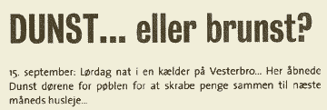
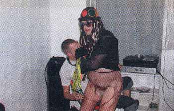
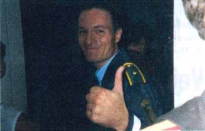

Dennis Agerblad i panbladet, Copenhagen. |


| Puta fra Kalingrad sammen med et par andre halv(ille)gale indvandrere: Miss Bucharest 1989 og Hr. Dennis Agerblad fra Færøerne. |

| Boy George kom forbi og gav et nummer. Med denne opreklamering køkkedes det dunst-drengene at fylde kælderen op før klokken slog halv et. Her modtager dunst's Boy George tilgivelse fra en af de mange fans, som måtte gå forgæves ved Mermaid Pride-festen i SILO. |

| Også politiet kom en tur forbi festen. Efter at have besigtiget
festen var ordensmagten overbevist om , at der ikke kunne være tale
om et kommercielt arrangement. En smigret betjent forlader her festen efter
at have modtaget flere telefonnumre fra diverse niformshungrende drenge. trk/asm |